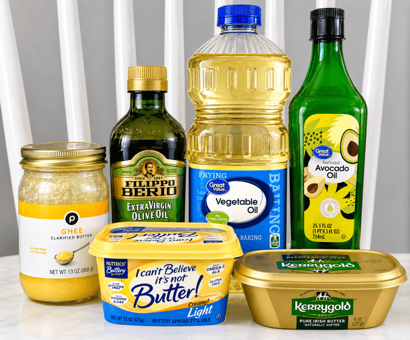

Oils & Fats 101
Every fat in your kitchen is doing three things at once: handling heat, carrying flavor, and bringing its own nutrition profile to the plate. This primer walks through all three, then rounds up the details on every oil, butter, and fat worth keeping in the kitchen.

What is smoke point?
Smoke point is the temperature at which a fat starts to break down and visibly smoke. Past that point, it releases compounds that taste bitter and burnt, and the fat degrades faster the next time you reuse it. Refining strips out the impurities (proteins, water, tiny particulates) that lower a fat's smoke point, which is why a refined oil — light olive oil instead of extra virgin, for example — can take more heat than its unrefined counterpart. The rule of thumb: match the fat to the method. Searing and deep frying call for a high smoke point; gentle sautéing, dressings, and finishing drizzles can use a lower one.
Mild vs. strong
Fat is a flavor ingredient, not just a cooking medium. Neutral oils — canola, grapeseed, sunflower, refined oils — get out of the way and let everything else in the dish lead, which is what you want for baking, frying delicate foods, or anywhere else you don't want the fat competing for attention. Bolder fats like extra virgin olive oil, toasted sesame oil, or butter bring their own taste to the table, so save them for when you want that flavor to be part of the dish — a peppery olive oil finishing a salad, or sesame oil rounding out a stir-fry. As a rule, the stronger the flavor, the more it belongs off the heat: high temperatures cook off (and can even burn away) the delicate aromatics that make a bold fat worth using.
A spectrum of fats
Every fat is a mix of saturated, monounsaturated, and polyunsaturated fatty acids in different ratios — the more unsaturated, the more liquid it is at room temperature, which is why olive oil pours and butter doesn't. Mainstream dietary guidance generally favors fats higher in unsaturated fat (most plant oils) over those higher in saturated fat (butter, ghee, lard, coconut oil), and recommends moderation across the board rather than cutting out any one fat entirely.
This is a simplified overview, not medical advice — individual needs vary, percentages are approximate and vary by brand and source, and the bigger picture (how a fat is used, what it replaces, your overall diet) matters more than any single ingredient.